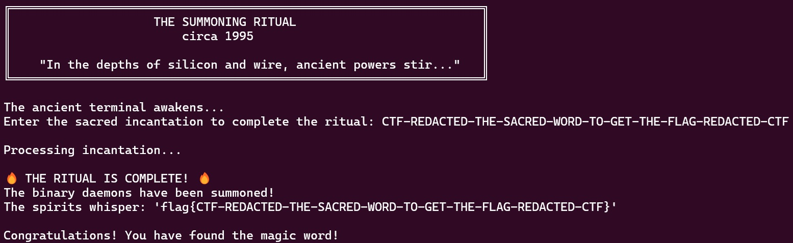
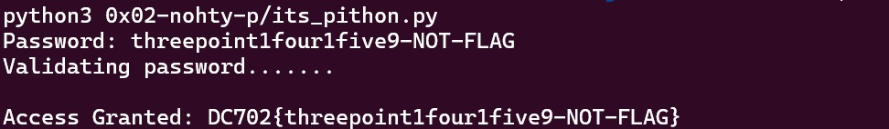
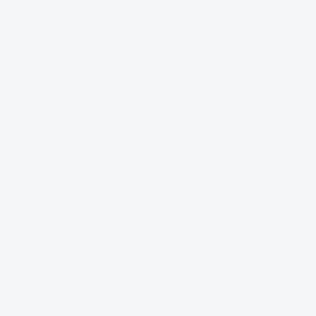

DC702 CTF - Write Up
By Omar Essilfie-Quaye
The CTF
I was recently able to attend a CTF run by DC702 and C2Soc. It was a relatively short CTF for beginners and and experts alike. I had 4 hours to capture as many flags as possible or be forever known as a newb. JK the organizers were amazing and were walking around and checking in on everybody to make sure they were having fun and throwing cheeky hints in here and there.
One thing that was made clear right at the start was that this was a short CTF and at all times the goal was to stay on task. This was a crucial theme across some of the challenges and if you were not paying attention it could have been easy to fall into a few traps.
The CTFs were split into a few sections, I focused on some of the reverse engineering based ones and my team mates did some of the others. In the interest of education i will share some of my solutions to the puzzles that i found the most fun. I will not be sharing the final flags to respect the integrity of any future DC702 events.
The Summoning Ritual - 80 Points
This CTF has a fairly simple aim to get the flag from the python script summoning_ritual.py. There are a quite a few functions in the script which I gave a quick glance to understand roughly how they work on my way down to the main function. At the time the checksum function stood out so I was mentally preparing to come back to this when needed.
def display_banner():
def calculate_checksum(data):
"""Mysterious encryption function for data integrity"""
def validate_incantation(user_input):
"""The sacred cipher - DO NOT MODIFY - DELETE AFTER DEBUG"""
def initialize_ritual_components():
"""Setup the ancient digital components"""
A more detailed inspection of the main function shown below led me to realise a few things:
- The user input is taken in, capitalised and a checksum calculated. But this checksum is not saved in any variable.
- The validate_incantation() function is the main function of importance
- The flag is basically the user input wrapped in curly braces as per the standard format in most CTFs.
def main():
...
try:
user_input = input().strip().upper()
...
calculate_checksum(user_input)
...
if validate_incantation(user_input):
...
print(f"The spirits whisper: 'flag{{{user_input}}}'")
print("\nCongratulations! You have found the magic word!")
else:
...
A refocus on the validate_incantation() function very quickly reveals that the sacred_word variable is the required input for the python script to get the flag.
def validate_incantation(user_input):
"""The sacred cipher - DO NOT MODIFY - DELETE AFTER DEBUG"""
sacred_word = "CTF-REDACTED-THE-SACRED-WORD-TO-GET-THE-FLAG-REDACTED-CTF"
if len(user_input) != len(sacred_word):
return False
for i in range(len(sacred_word)):
if user_input[i] != sacred_word[i]:
return False
return True
The first flag and the lesson is already being made clear. Stay on task! Don't waste time looking at things which don't get you to the flag. It would have been very easy to waste a lot of time trying to reverse the calculate_checksum() function. I was lucky that I decided to get an overall understanding of the control flow of the script before getting drawn down a rabbit hole with zero benefit.

NohtyP - 100 Points
This flag is similar to the summoning ritual but has a slightly increased difficulty. In this case the flag isn't directly in the python script and you have to understand how python works a little bit to figure out the puzzle.
def validate(c, i):
if (i == 0 or i == 9) and c == "t":
return True
if (i == 1) and (ord(c) == 104):
return True
if (i == 2) and (c == "secure"[4]):
return True
if (i == 3 or i == 4) and (c == chr(ord("g")-2)):
return True
if i in [5,6,7,8,9]:
if c == "tniop"[::-1][i-5]:
return True
if i in range(10,21):
doot = base64.b64decode("MWZvdXIxZml2ZTk=".encode("ascii")).decode("ascii")
if c == doot[i - 10]:
return True
if i in range(21, 31):
if c == "GANGALF-TON-"[::-1][i-21]:
return True
return False
The crux of the problem is the validate character function which takes in a character and an index and checks if the character is correct. Manually going through the first few quickly reveals a pattern, the number pi. The flag is the first few digits of pi in an alternating pattern back and forth as numbers and words. I was able to use the expected length of the password to figure out at what point to stop and plugging it in to the script revealed the flag.

There was another lovely clue there with the file name for the python script being "its_pithon.py". That should have been a giveaway but that was a small clue I missed that could have saved me some time.
RE-Versing - 125 Points
Tesla Cybertruck Infotainment - 150 Points

Tanks

Snowman